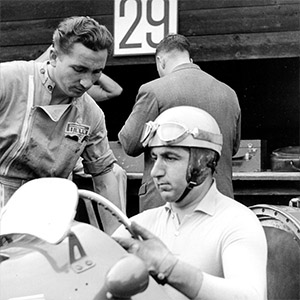
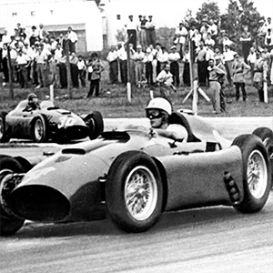
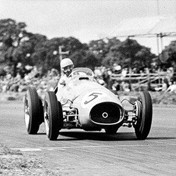
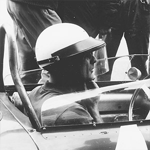
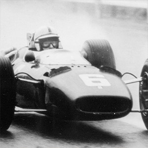
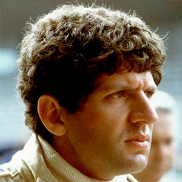
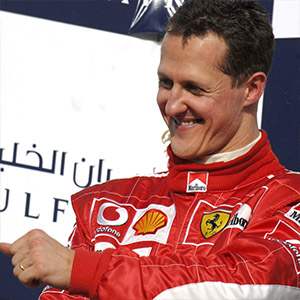
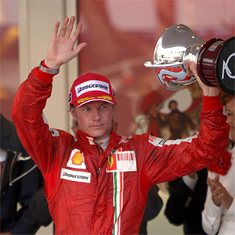

2 Championships
Alberto Ascari
Still today Alberto Ascari is the only Italian driver who has ever won two Formula One world Titles, both of then behind the wheel of a Ferrari.
Read more

1 Championship
Juan Manuel Fangio
Clear and insatiable individualism was Juan Manuel Fangio’s main characteristic. The Argentine driver was appraised and feared by his colleagues and adversaries alike.
Read more

1 Championship
Mike Hawthorn
CMike Hawthorn, one of the greatest talents in motor racing, became a racing driver almost by accident. Born in 1929 he inherited his father’s passion, enthusiasm and determination: these were the necessary requisites to become one of the most feared drivers of his times.
Read more

1 Championship
Phil Hill
Phil Hill was a racing driver of promise since his childhood when he was 9 years old and found himself behind the wheel of a car simulating being a racing driver with the steering wheel and the pedals.
Read more

1 Championship
John Surtees
Nine World Titles for John Surtees, a symbol of passion and success in terms of motor sports competitions. An all round racing driver, able to win seven World Titles on two wheels and another two in Formula 1.
Read more

1 Championship
Jody Scheckter
The young driver Jody Scheckter was called by Enzo Ferrari to be part of the Scuderia in 1979. Jody, a South African with Lithuanian origins, was already racing at a young age in the minor formulas. He started with karts passing on to tourism class, Formula Ford and Formula 3.
Read more

5 Championships
Michael Schumacher
Michael Schumacher was born in Huerth-Hermuelheim, Germany, on 3 January 1969. Michael’s career, all one needs is these numbers: 7, 68, 76, 91, 1369. They are respectively, the number of world titles, pole positions, fastest race laps.
Read more

1 Championship
Kimi Räikkönen
Kimi-Matias Kimi Räikkönen was born in Finland, on 17 October 1979, with racing in his blood. His career started at the age of 10 when he successfully raced karts, and in 1998 won the Nordic Karting Championship.
Read more